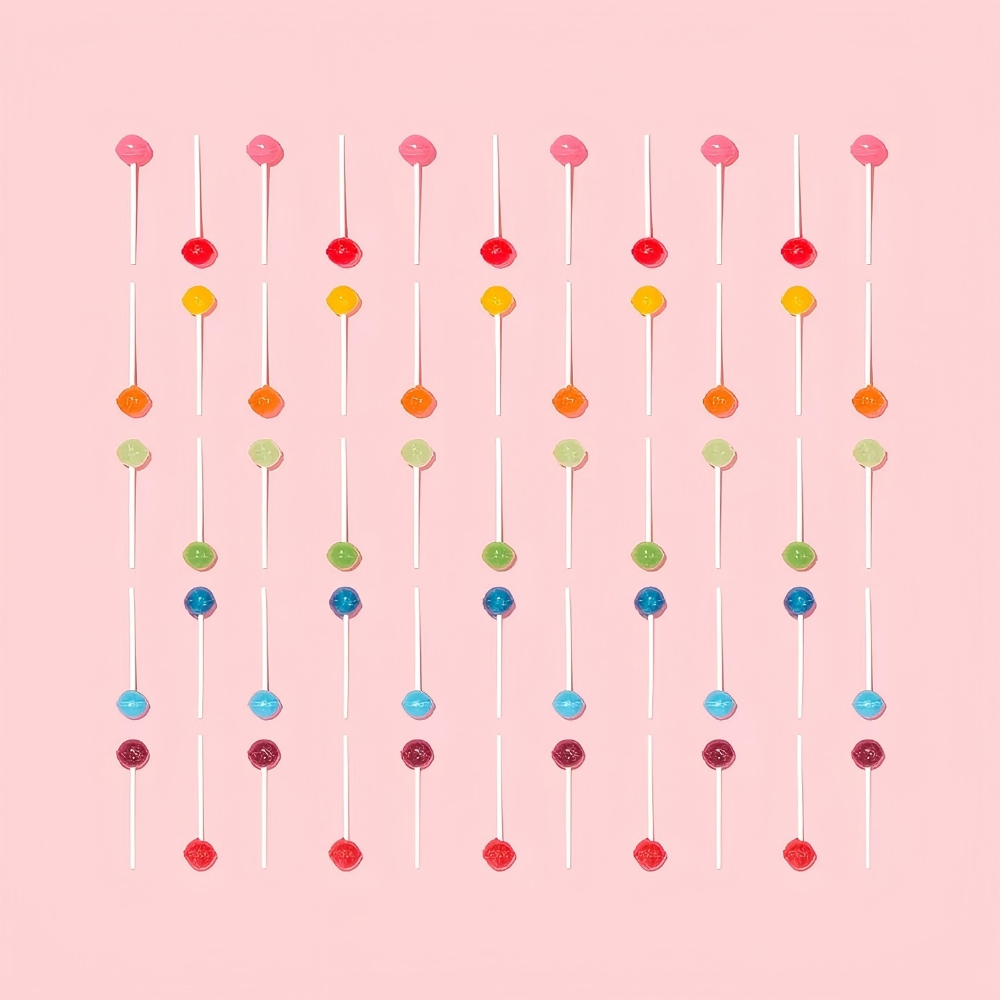
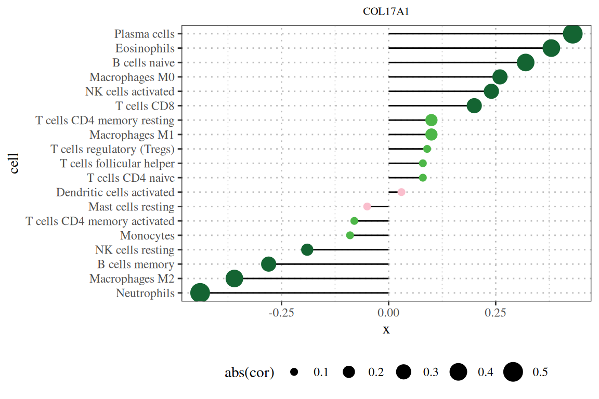
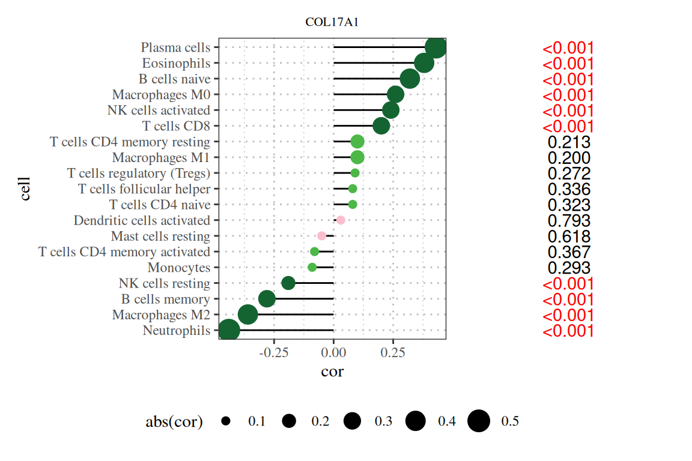
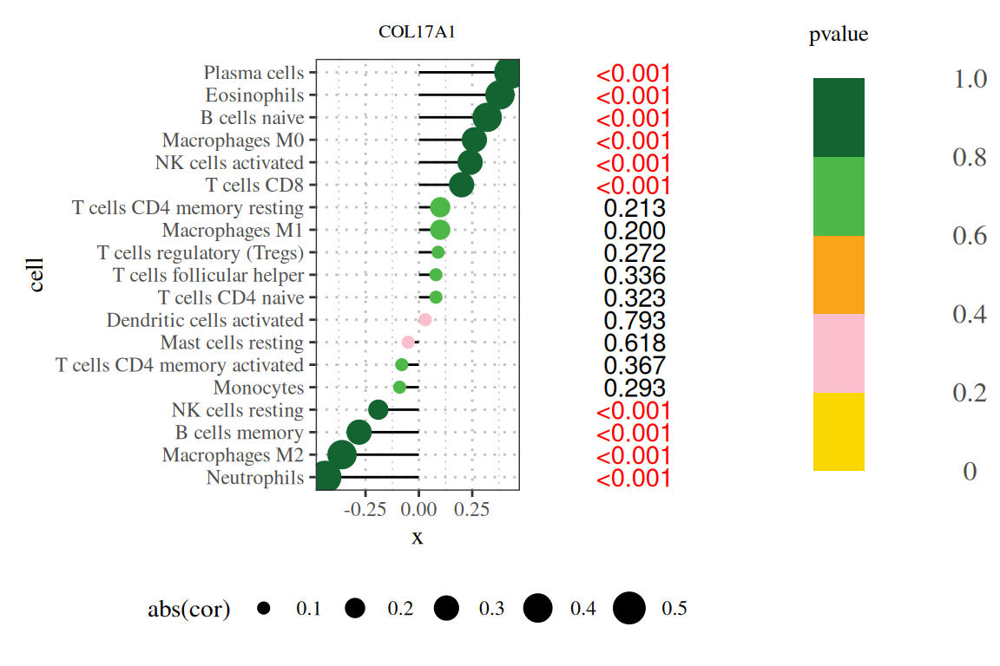
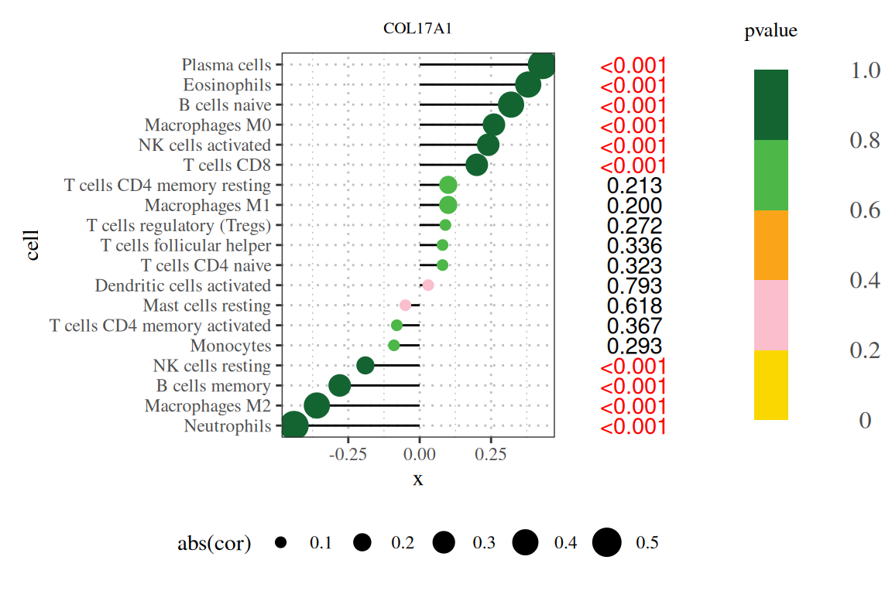
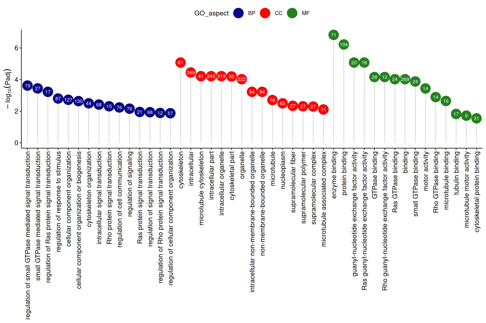
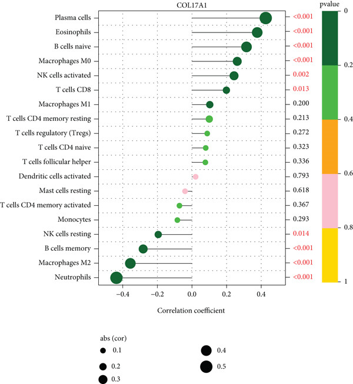
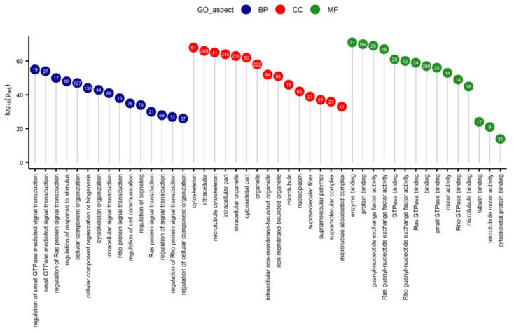

# Installing packages
if (!requireNamespace("ggplot2", quietly = TRUE)) {
install.packages("ggplot2")
}
if (!requireNamespace("ggpubr", quietly = TRUE)) {
install.packages("ggpubr")
}
if (!requireNamespace("patchwork", quietly = TRUE)) {
install.packages("patchwork")
}
if (!requireNamespace("dplyr", quietly = TRUE)) {
install.packages("dplyr")
}
# Load packages
library(ggplot2)
library(ggpubr)
library(patchwork)
library(dplyr)Lollipop Plot
Example

(Image by Amy Shamblen on Unsplash)
Tired of the same old bar charts? If you don’t have cavities, why not turn your bar chart into a stick chart while eating a lollipop?
Setup
System Requirements: Cross-platform (Linux/MacOS/Windows)
Programming language: R
Dependent packages:
ggplot2,ggpubr,patchwork,dplyr
Data Preparation
The data are from the article by Yang et al. [1-2]
# Loading data
data <- read.csv('https://bizard-1301043367.cos.ap-guangzhou.myqcloud.com/lollipop_1.csv', row.names = 1) # Correlation analysis data reading
# View the dataset
head(data) cell pvalue cor
1 Plasma cells 3.6e-08 0.43
2 Eosinophils 1.1e-06 0.38
3 B cells naive 5.8e-05 0.32
4 Macrophages M0 9.4e-04 0.26
5 NK cells activated 2.2e-03 0.24
6 T cells CD8 1.3e-02 0.20# Loading data
data_2 <- read.csv('https://bizard-1301043367.cos.ap-guangzhou.myqcloud.com/lollipop_2.csv') # Gene enrichment analysis data readout
# View the dataset
head(data_2) GO.category GO.Process.description..term. GO.Term.ID
1 GO:MF enzyme binding GO:0019899
2 GO:MF protein binding GO:0005515
3 GO:MF guanyl-nucleotide exchange factor activity GO:0005085
4 GO:MF Ras guanyl-nucleotide exchange factor activity GO:0005088
5 GO:MF GTPase binding GO:0051020
6 GO:MF Rho guanyl-nucleotide exchange factor activity GO:0005089
p.value Number.of.all.known.genes.enriched.to.the.GO.term
1 2.2252e-09 1,518
2 1.7950e-08 6,853
3 4.1462e-07 187
4 6.2395e-07 118
5 1.2078e-05 424
6 1.2377e-05 76
DEGs.with.GO.annotation Number.of.DEGs.enriched.to.the.particular.GO.term
1 313 71
2 313 194
3 313 20
4 313 16
5 313 28
6 313 12
Gene.names.engaged.in.particular.GO.term
1 ADCY6,ALS2,ARHGAP33,ARHGAP44,ARHGEF11,ARHGEF17,ARHGEF19,ARHGEF39,ARRDC1,AXIN2,BRD4,CAVIN3,CCNF,CLEC16A,COL1A1,CUL9,DBF4B,DENND6B,DIAPH1,DIO2,DLG4,DOCK6,DPP4,EGFR,FARP2,FURIN,GAS8,GBF1,HDAC6,HDAC7,HERC2,HTT,ISG15,KANSL1,KNDC1,KSR1,MAST2,MID1,MLPH,NCOR2,NOTCH1,OBSCN,PLEKHG2,PLEKHG3,PLK1,PPP6R2,PSD2,PTPN23,RAB11FIP3,RAPGEF1,RAPGEFL1,RBBP6,RHOF,RNF40,RPTOR,SBF1,SCAF1,SGSM1,SGSM2,SH2B1,SIK1,SKI,SLC9A1,SPATA13,SRCIN1,STRN4,TP73,TRAF3,TRIO,TSPAN5,VAV2
2 ADCY6,AKAP17A,ALOX15,ALS2,ANKRD11,ARHGAP17,ARHGAP33,ARHGAP39,ARHGAP44,ARHGEF11,ARHGEF17,ARHGEF19,ARHGEF39,ARNT2,ARRDC1,ATXN1L,AXIN2,BCL9L,BRD3,BRD4,BTBD19,BTNL9,C12H17ORF100,C1QA,C1QTNF6,CACNA1G,CAMSAP1,CASKIN1,CAVIN3,CCNF,CD59,CD79A,CDH24,CENPT,CEP131,CEP164,CEP170B,CHD2,CHD7,CHERP,CLEC16A,COL1A1,COL5A1,CREBBP,CRSP3,CRTC1,CSRP1,CUL9,DBF4B,DENND4B,DENND6B,DGKD,DIAPH1,DIO2,DLG4,DLL1,DNAH1,DOCK6,DPP4,DYNC1H1,E2F1,E2F7,EFS,EGFR,EHBP1L1,EHMT1,ELMSAN1,ENSSSCG00000035856,EP300,FARP2,FBXL18,FURIN,FXYD1,GAS7,GAS8,GBF1,GIGYF1,GIPC3,HDAC6,HDAC7,HERC2,HTT,IGSF9,INPPL1,ISG15,KANSL1,KCNQ4,KCP,KCTD7,KIF12,KIF18B,KIF1A,KIF1C,KIF21B,KIF26A,KIF7,KMT2B,KNDC1,KSR1,LARP1,LDB3,LRP5,LZTS1,MAST2,MED12,MEGF8,MID1,MLPH,MMRN1,MNT,MRAP2,MYH14,MYH3,MYH7B,MYH9,NAV2,NCOR2,NECTIN1,NOTCH1,NSD2,NUMA1,OBSCN,PAX2,PER3,PIK3R2,PLCG1,PLEKHA6,PLEKHG2,PLEKHG3,PLK1,PLXNA1,PLXNA3,PLXNB3,PPP6R2,PRDM15,PSD2,PTPN23,PTPRF,RAB11FIP3,RAPGEF1,RAPGEFL1,RBBP6,RERE,RGS2,RHOF,RNF123,RNF40,RPTOR,RSPO3,S100A9,SALL1,SARM1,SART3,SBF1,SCAF1,SEMA4C,SEMA4F,SETD5,SGSM1,SGSM2,SH2B1,SH3PXD2B,SIK1,SKI,SLC9A1,SPATA13,SPTAN1,SRCIN1,STRN4,SYNE2,SYT3,TCAP,TENM2,TLE2,TMEFF2,TONSL,TP73,TRAF3,TRANK1,TRAPPC12,TRIM66,TRIO,TRRAP,TSPAN5,TSPO,TYK2,UBR4,UNC5B,USP20,VAV2,VEGFA,WDFY3,WDR62,ZMYND8
3 ALS2,ARHGEF11,ARHGEF17,ARHGEF19,ARHGEF39,DENND6B,DOCK6,FARP2,GBF1,KNDC1,OBSCN,PLEKHG2,PLEKHG3,PSD2,RAPGEF1,RAPGEFL1,SBF1,SPATA13,TRIO,VAV2
4 ALS2,ARHGEF11,ARHGEF17,ARHGEF19,ARHGEF39,DENND6B,FARP2,KNDC1,OBSCN,PLEKHG2,PLEKHG3,RAPGEF1,SBF1,SPATA13,TRIO,VAV2
5 ALS2,ARHGAP44,ARHGEF11,ARHGEF17,ARHGEF19,ARHGEF39,CLEC16A,DENND6B,DIAPH1,DOCK6,FARP2,GAS8,GBF1,KNDC1,MLPH,OBSCN,PLEKHG2,PLEKHG3,PSD2,RAB11FIP3,RAPGEF1,RAPGEFL1,SBF1,SGSM1,SGSM2,SPATA13,TRIO,VAV2
6 ALS2,ARHGEF11,ARHGEF17,ARHGEF19,ARHGEF39,FARP2,OBSCN,PLEKHG2,PLEKHG3,SPATA13,TRIO,VAV2Visualization
1. Basic Plot
Basic stick figure showing the results of the correlation between COL17A1 gene and immune infiltration. [1]
# Basic Lollipop Plot
# Convert correlation coefficients and p-values to categorical variables
data$pvalue_group <- cut(data$pvalue,
breaks = c(0, 0.2, 0.4, 0.6,0.8, 1),
labels = c("< 0.2","< 0.4","< 0.6","< 0.8","<1"),
right=FALSE)# right=FALSE表示表示区间为左闭右开
data$cor_group_size <- cut(abs(data$cor),# 绝对值
breaks = c(0, 0.1, 0.2, 0.3, 0.4, 0.5),
labels = c("0.1","0.2","0.3","0.4","0.5"),
right=FALSE)
# Order
data = data[order(data$cor),]
data$cell = factor(data$cell, levels = data$cell)
p = ggplot(data,
aes(x = cor, y = cell, color = pvalue_group)) +
scale_color_manual(name="pvalue",
values = c("#146432",
"#4DB748",
#"#FAA519", # Since there is no data in this interval, comment it out.
"#FABECD" #,
#"#FAD700" #Since there is no data in this interval, comment it out.
))+ # Color selection of candies in lollipops
geom_segment(aes(x = 0, y = cell, xend = cor, yend = cell),
color = 'black', # Drawing of the stick in a lollipop
linewidth = 0.5) +
geom_point(aes(size = cor_group_size))+ # Drawing of candy in lollipop
labs(title = "COL17A1", # Image title
size = "abs(cor)") + # legend name
guides(color = "none")+ # Hide redundant legends
theme_bw()+
theme(plot.title=element_text(size=8, # title size
hjust=0.5 ), # title position
legend.position = "bottom", # legend position
text = element_text(family = "serif"), # Set the font to Times New Roman
panel.grid = element_line(linetype = "dotted",color='grey'))
p

Note: The figure title is the gene name, the vertical axis is the lineage number, the horizontal axis is the gene expression level, and cor is the correlation between gene expression and cell abundance. The horizontal axis represents the correlation, the magnitude represents the absolute value of the correlation, and the color represents the P value.
To make the lollipop chart more informative, we can add information to the right side of the chart. We already sorted the chart by p-value in the previous step. In this step, we can add text about the p-value to make the chart more readable.
data$pvalue_col <- cut(data$pvalue,
breaks = c(0, 0.05,1),
labels = c("< 0.05","> 0.05"),
right=FALSE) # Add color classification information to data
data$pvalue_text <- ifelse(data$pvalue>0.05,sprintf("%.3f", data$pvalue),'<0.001') # Add the text you want to draw in data
p1 = ggplot()+
geom_text(data,mapping = aes(x = 0, y = cell, color = pvalue_col,
label = pvalue_text))+
scale_color_manual(name="",values = c("red", "black"))+
theme_void()+
theme(text = element_text(family = "serif"))+
guides(color=F) # remove legend
p|p1

Note: The title of the figure is the gene name, the vertical axis is the lineage number, the horizontal axis is the expression level of the gene, cor is the correlation between gene expression and cell abundance, where the horizontal axis is the correlation, the size is the absolute value of the correlation, the color is the P value, and the number on the right is the P value.
2. Add legend
stack_data = data.frame( x = c("legend","legend","legend","legend","legend"),
class = c("0-0.2", "0.2-0.4", "0.4-0.6", "0.6-0.8", "0.8-1"),
color_range = c(0.2,0.2,0.2,0.2,0.2))
p2 <- ggplot(stack_data, aes(x = x, y = color_range, fill = class)) +
geom_bar(stat = 'identity', position = "stack", width = 0.3) +
scale_fill_manual(name = "P-value",values = c("#146432", "#4DB748", "#FAA519", "#FABECD", "#FAD700")) + # Set Color
scale_y_continuous(breaks = seq(0, 1, by = 0.2),
labels = c("0","0.2","0.4","0.5","0.8","1.0" ),
sec.axis = sec_axis(~., breaks = seq(0, 1, by = 0.2),
labels = c("0", "0.2", "0.4", "0.6", "0.8", "1.0"))) + # Set the y-axis scale and move the y-axis to the right
labs(title = "pvalue")+ # Image title
theme_minimal() +
theme(axis.text.x = element_blank(),
axis.title.x = element_blank(),
axis.text.y = element_blank(),
axis.title.y = element_blank(),
panel.grid = element_blank(),
plot.margin = unit(c(0, 0, 0, 0), "cm"),
axis.text.y.right = element_text(size = 12),
legend.position = "none",
plot.title=element_text(size=10,
hjust=0.5 ),
text = element_text(family = "serif"))
p|p1|p2

Note: The title of the figure is the gene name, the vertical axis is the lineage number, the horizontal axis is the expression level of the gene, cor is the correlation between gene expression and cell abundance, where the horizontal axis is the correlation, the size is the absolute value of the correlation, the color is the P value, and the number on the right is the P value.
3. Beautify Plot
layout <- c(
area(t = 1, l = 1, b = 1, r = 2),
area(t = 1, l = 3, b = 1, r = 3),
area(t = 1, l = 4, b = 1, r = 4)
)
p + p1 + p2 +
plot_layout(design = layout)

If necessary, you can further beautify it using Power point or Adobe illustration.
4. Enrichment analysis plots
# Enrichment analysis lollipop plot
data_2 <- data_2[,c(1,2,4,7)] # Only leave the information needed for drawing
colnames(data_2) <- c("GO_aspect","GO_term","P","count") # Rename column names
data_2 <- data_2[data_2$GO_aspect!='KEGG',] # Remove the data of KEGG enrichment analysis
data_2$Padj <- p.adjust(data_2$P, method = "BH") # Calculate Padj using the Benjamin-Hochberg method
data_2$log10Padj = -log10(data_2$Padj) # Calculate -log10Padj
data_2$GO_aspect[data_2$GO_aspect=="GO:BP"] ="BP"
data_2$GO_aspect[data_2$GO_aspect=="GO:CC"] ="CC"
data_2$GO_aspect[data_2$GO_aspect=="GO:MF"] ="MF"
# Group by GO_aspect, then sort each group by log10Padj and take the first 15 data
data_2 <- data_2 %>% group_by(GO_aspect) %>%
arrange(GO_aspect, desc(log10Padj)) %>% # Sort by log10Padj in descending order
slice_head(n = 15) # Take the first 15
# Plot
ggdotchart(data_2, x = "GO_term", y = "log10Padj",
color = "GO_aspect", # Display colors by group
palette = c("#090886", "#F90708", "#25821F"), # Custom color palette
sorting = "descending", # Sort values in descending order
add = "segments", # Add a line segment from y=0 to the point
group = "GO_aspect", # Sort by group
dot.size = 8, # Dot size
label = round(data_2$count), # Add mpg values as point labels
font.label = list(color = "white", size = 9,
vjust = 0.5), # Adjust label parameters
ggtheme = theme_pubr() # ggplot2 theme
)+labs(x=NULL,y=expression(-log[10](Padj)),
title=NULL)

Note: The vertical axis is -log10Padj, the horizontal axis is GO terms, the color is GO category, and the numbers in the circles are the number of genes enriched in each GO term.
Application
1. Correlation analysis

The application of the lollipop plot (Figure 9A in the original text) shows the results of the correlation between the COL17A1 gene and immune infiltration.[1]
2. Gene pathway enrichment analysis

The application of the lollipop plot (Figure 3 in the original text) shows the results of GO enrichment analysis of differentially expressed genes. [2]
Reference
[1] Yang, M. Y., Ji, M. H., Shen, T., & Lei, L. (2022). Integrated Analysis Identifies Four Genes as Novel Diagnostic Biomarkers Which Correlate with Immune Infiltration in Preeclampsia. Journal of immunology research, 2022, 2373694. https://doi.org/10.1155/2022/2373694
[2] Paukszto, L., Mikolajczyk, A., Jastrzebski, J. P., Majewska, M., Dobrzyn, K., Kiezun, M., Smolinska, N., & Kaminski, T. (2020). Transcriptome, Spliceosome and Editome Expression Patterns of the Porcine Endometrium in Response to a Single Subclinical Dose of Salmonella Enteritidis Lipopolysaccharide. International journal of molecular sciences, 21(12), 4217. https://doi.org/10.3390/ijms21124217